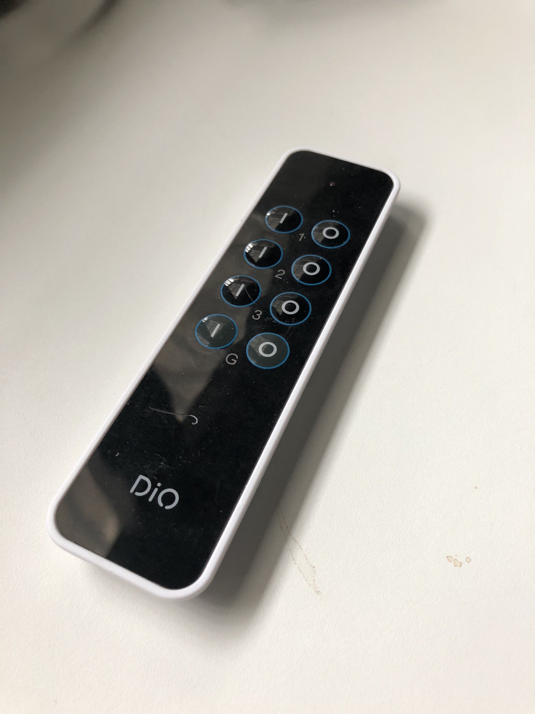

Comment j’ai rendu ma maison moins bête
MAISON<
]futur
disclaimer
@Cedric_Gatay
Developer
 Code-Troopers co-founder
Code-Troopers co-founder
GDG Tours lead
TouraineTech co-organizer
https://unsplash.com/photos/A9H40TYRbbk
MAISON<
]futur
^ {
- environ 250€
- 5h de configuration
- fiabilité hasardeuse
- bas coût
- sécurité
https://unsplash.com/photos/vkfrFrAIO4o

- Applications mobiles
- Interrupteurs physiques
- Contrôle Vocal
- 868.42 MHz
- réseau maillé
- avec retour d’état
35€
40€
40€
50€
- 50€ pour une clef ZWave
- 50€ par élément
https://unsplash.com/photos/fPxOowbR6ls
- 5€ le bouton
- Wifi
- Permet de commander du Thé
https://unsplash.com/photos/FrWStnBsfxI
- Protocole domotique poussé par Apple
- iOS
- Compatibilité restreinte

https://unsplash.com/photos/Ddjl0Cicdr4
⇒ passage en version ßeta
- construction d’une image automatisée
- hooks cachés dans hub
- push de tag vide
https://github.com/CedricGatay/docker_domoticz

if [[ "$DOCKER_TAG" == *-beta ]];
then
docker build \
--build-arg VCS_REF=$SOURCE_COMMIT \
-t $IMAGE_NAME .;
else
docker build \
--build-arg BRANCH_NAME=$DOCKER_TAG \ (1)
--build-arg VCS_REF=$SOURCE_COMMIT \
-t $IMAGE_NAME .;
fi
| 1 |
BRANCH_NAME est utilisé lors du git clone |
MAISON<
]futur
^ }
- jeedom
- openHAB
- home-assistant
- Python 3.5
- Apache Software License 2.0
- configuration YAML
- 1000 composants
- deux releases par mois

zwave:
usb_path: /dev/cu.usbmodem1411
network_key: "0x5C, 0x6A, 0x84, 0x16, 0x9E, 0x60, 0x28, 0x9A, 0xF9, 0x8B, 0x69, 0x67, 0x6B, 0x75, 0x87, 0x2F"
rfxtrx:
device: /dev/tty.usbserial-A4VBQJPT
light:
- platform: rfxtrx
automatic_add: True
switch:
platform: rfxtrx
automatic_add: True
devices:
0b110000014e18e601010f50:
name: Prise 1
0b110002014e18e602010f50:
name: Prise 2
- action:
- data:
entity_id: switch.prise_1
service: switch.turn_on
alias: Porte ouverte - lumière
condition: []
id: '1521664603446'
trigger:
- entity_id: binary_sensor.sensor_porte
from: 'off'
platform: state
to: 'on'
- platform: scrape
resource: 'https://mobi.filbleu.fr/horaires-et-trajet/horaires-temps-reel?view=tempsreel&id_ligne=A&id_arret=JJAU-1T&ordering=1&submit_bt=recherche&user=0'
name: Jean_Jaures_Aller
select: "span.passage.passage0"
- platform: rest
resource: "https://hub.docker.com/v2/repositories/cgatay/domoticz/"
value_template: '{{value_json.pull_count}}'
name: "cgatay/domoticz pull"